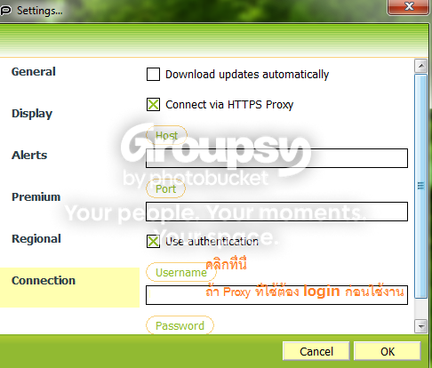

จำเป็นที่จะต้อง
1. มีรูปดิสเพล อวาต้าของตนเองโดยไม่เว้นว่างไม่ใส่ไว้ จะเป็นภาพอะไรก็ได้ไม่ส่อเสียดหยาบคาย หรือดูหมิ่นไม่เหมาะสมใดๆ
2. ต้องมีเลเวลสมาชิกปาลริงโก้ lv1 เป็นต้นไป
3. ยืนยันบัญชีสมาชิก Palringo ผ่านอีเมล์เป็นที่เรียบร้อย **สำหรับสมาชิกเก่าแก่ที่รู้จักกันดีอยู่แล้วไม่จำเป็นต้องทำก็ได้**
4. อ่านกฎข้อบังคับ และรายละเอียดของกลุ่มอย่างเคร่งครัด
ทั้งนี้เพื่อป้องกันสแปมเมอร์ และป้องกันคนหลงเข้ามาในกลุ่มพาคนในห้องมึนงงกันทั้งห้อง
มารยาททั่วๆไปของกลุ่ม
- ไม่สแปมหรือฟลัดข้อความรัวๆถึงขนาดทำให้คนอื่นรำคาญ
- ไม่ป่วนห้อง หรือ เอาประเด็นที่ทำให้ผู้อื่นเดือดร้อนมาพูด อาทิ ประเด็นการเมือง, ศาสนา, สถาบันพระมหากษัตริย์
- การถามหาคำตอบจากสมาชิกในห้อง ควรถามอย่างสุภาพ อดทนรอจนกว่าจะมีคนตอบ สมาชิกในห้องอาจไม่ว่างหรือไม่ทราบคำตอบ ห้องเงียบยาวได้เป็นบางเวลา อดใจรอนิดนึงไม่เช่นนั้นก็ซิบเคาะเรียกคนที่ออนอยู่ในห้อง
- Netiquette พึงปฎิบัติกับผู้อื่นเหมือนกับที่เราอยากให้ผู้อื่นปฎิบัติกับเรา *สำคัญมาก*
- ห้าม 3D ทุกประการ (คุณ Donlanai ฝากมา) + (ยกเว้นภาพกระต่ายน่ารักๆ ได้)
- โปรดใช้วิจารญาณในการอ่านกะทู้นี้
หากระเมิดกฎข้อบังคับใดๆ หรือ เพิกเฉยมารยาทที่ผู้อื่นตักเตือนจะถูกเชิญออกจากห้องโดยไม่ใยดี
คนที่ไม่ได้ออนนาน จะมีระบบเตะรายชื่อสามชิกออกจากลุ่มอัตโนมัติ ซึ่งเป็นระบบของปาลริงโก้อยู่แล้ว คนที่ถูกเตะผ่านระบบนี้ไม่ต้องตกใจอะไร สามารถ Join กลับเข้ากลุ่มได้ปกติ
ห้องปาลจะมีการเคลียร์บัญชีรายชื่ออยู่เรื่อยๆ สำหรับคนที่เข้ากลุ่มมาแล้วเงียบหายยาว ไม่มีเพื่อน ไม่มีใครรู้จักชื่อแซ่ ทักไม่ตอบ อาจถูกเชิญออกตามความเหมาะสม
____________________________________________________________________________________________
สำหรับคนที่ต้องการเข้ากลุ่ม โหลด Client โปรแกรมแชทปาลริงโก้ได้ ที่นี่

____________________________________________________________________________________________
เพิ่มเติมสำหรับบางท่านที่มีปัญหาในการเชื่อมต่อเข้า Palringo // Log in ติดๆดับๆ // รูปโหลดไม่ค่อยขึ้น // เชื่อมต่อไม่ได้
สามารถใช้ Proxy เชื่อมต่อช่วยเหลือเพื่อบรรเทาอาการ หรือแก้ปัญหาได้ โดย
ไปที่ menu bar เลือก File > Settings... แล้วกรอกข้อมูล Proxy ที่ใช้

ข้อมูลเพิ่มเติม - เซิฟเวอร์ที่ตั้งโฮสให้บริการปาลริงโก้ที่ใช้งานกันอยู่ ณ ปัจจุบัน

คำแนะนำให้เลือก Proxy ที่อยู่ใกล้ ในระยะเดินทางจะช่วยทำให้คุณภาพการเชื่อมต่อดีขึ้น
*ยกเว้นกรณี ไอพีที่เชื่อมต่อไปโดนแบน หรือเซิฟเวอร์ที่ให้บริการไม่ค่อยดีอยู่แล้ว

____________________________________________________________________________________________
12-08-2012
เพื่อเป็นการจัดระเบียบกลุ่มใหม่
ขณะนี้จะเริ่มทำการเคลียร์บัญชีรายชื่อคนที่หายยาว หรือ user LV.0-2
ออกจากกลุ่ม
ใครที่ถูกเชิญออกด้วยความสะเพร่าหรือผิดพลาดของ Admin
ขอโปรดแสดงความให้อภัย และกลับเข้ากลุ่มปาลดังเดิม ;w;


ภาพก่อนจัดระเบียบสมาชิก